CSS权威指南（3rd）笔记-查缺补漏2 - 基本视觉格式化
如果全面地掌握了CSS中视觉表现模型是如何工作的，你就能确定一种行为到底是CSS所定义表现引擎的正确结果（尽管出乎意料），还是一个需要报告的bug。
基本框
CSS假定每个元素都会生成一个或多个矩形框，这称为元素框（规范的将来版本可能允许非矩形的框，不过对现在来说，框都是矩形的）。各元素框中心有一个内容区（content area）。这个内容区周围有可选的内边距、边框和外边距。这些项之所以被认为是可选的，原因是它们的宽度可以设置为0，实际上这就从元素框去除了这些项。
边框使用已定义样式生成，如solid或inset，边框的颜色使用border-color属性设置。如果没有设置颜色，那么边框将取元素内容的前景色。例如，如果一个段落的文本是白色，那么该段落的所有边框都是白色，除非创作人员显式地声明了另外一种边框色。如果边框样式有某种缝隙，则可以通过这些缝隙看到元素的背景。换句话说，边框与内容和内边距有相同的背景。最后要说明的是，边框的宽度绝对不能为负。
对不同类型的元素格式化时存在着差别。块级元素的处理就不同于行内元素，而浮动元素和定位元素也分别有各自不同的表现。
包含块
每个元素都相对于其包含块摆放；可以这么说，包含块就是一个元素的“布局上下文”。 CSS2.1定义了一系列规则来确定元素的包含块。这里介绍的只是其中的部分规则，这些规则的概念都将在本章加以明确，而其他规则将在后面的章节中介绍。
对于正常的西方语言文本流中的一个元素，包含块由最近的块级祖先框、表单元格或行内块祖先框的内容边界（content edge）构成。考虑下面的标记：1
2
3
4
5<body>
<div>
<p>This is a paragraph.</p>
</div>
</body>
在这个非常简单的例子中，p元素的包含块是div元素，因为作为块级元素、表单元格或行内块元素，这是最近的祖先元素（本例中是一个块元素框）。类似地，div的包含块是body。因此。p的布局依赖于div的布局，而div的布局则依赖于body的布局。
不必担心行内元素，因为它们的摆放方式并不直接依赖于包含块。本章后面还会讨论有关内容。
术语对于理解本章的概念很重要:
- 正常流
这是指西方语言文本从左向右、从上向下显示，这也是我们熟悉的传统HTML文档的文本布局，注意，在非西方语言中，流方向可能不同。大多数元素都在正常流中，要让一个元素不在正常流中，唯一的办法就是使之成为浮动或定位元素。要记住，本章只讨论正常流中的元素。 - 非替换元素
如果元素的内容包含在文档中，则称之为非替换元素。例如，如果一个段落的文本内容都放在该元素本身之内，这个段落就是一个非替换元素。 - 替换元素
这是指用作为其他内容占位符的一个元素。替换元素的一个经典例子就是img元素，它只是指向一个图像文件，这个文件将插入到文档流中该img元素本身所在位置。大多数表单元素也可以替换（例如，<input type="radio">)。 - 块级元素
这是指段落、标题或div之类的元素。这些元素在正常流中时，会在其框之前和之后生成“换行”，所以处于正常流中的块级元素会垂直摆放。通过声明display: block，可以让元素生成块级框。 - 行内元素
这是指strong或span之类的元素，这些元素不会在之前或之后生成“行分隔符”，它们是块级元素的后代。通过声明display: inline。可以让元素生成一个行内框。 - 根元素
位于文档树顶端的元素。在HTML文档中，这就是元素html在XML文档中。则可以是该语言允许的任何元素。
块级元素
块级元素的表现有时可以预测，有时则很让人惊讶。例如，元素沿横轴和竖轴摆放时，其处理就可能不同，为了充分了解如何处理块级元素，必须对一些边界和区域很清楚。
不同的宽度、高度、内边距和外边距相结合，就可以确定文档的布局。在大多数情况下，文档的高度和宽度由浏览器自动确定，这要基于可用的显示区域和其他一些因素。当然在CSS下，可以更直接地控制元素的大小以及显示方式。对于水平和垂直布局，可以选择不同的效果。
水平格式化
水平格式化往往比你想象得更复杂。其部分复杂性在于width影响的是内容区的宽度，而不是整个可见的元素框。（PS:通过CSS3属性box-sizing可以改变）
正常流中块级元素框的水平部分总和就等于父元素的width。假设一个div中有两个段落，这两个段落的外边距设置为1em。段落的内容宽度（width 的值）再加上其左、右内边距，边框或外边距，加在一起正好是div内容区的width,
假设div的width为30em，那么各段落内容宽度、内边距，边框或外边距的总和就是30em。在下图中，段落外的“空白”实际上是其外边距。如果div有内边距，还会有更大的空白，不过这里div没有内边距。稍后就会讨论内边距。
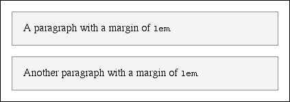
水平属性
水平格式化的“7大属性”是：margin-left、border-left, padding-left、width、 padding-right、border-right和margin-right。这些属性与块级框的水平布局有关。
这7个属性的值加在一起必须是元素包含块的宽度，这往往是块元素的父元素的width 值（因为块级元素的父元素几乎都是块级元素。
这7个属性中，只有3个属性可以设置为auto:元素内容的width，以及左、右外边距。其余属性必须设置为特定的值，或者默认宽度为0。
width必须设置为auto或某种类型的非负值。如果在水平格式化中确实使用了auto，会得到不同的效果。
使用auto
如果设置width、margin-left或margin-right中的某个值为auto，而余下两个属性指定为特定的值，那么设置为auto的属性会确定所需的长度，从而使元素框的宽度等于父元素的width。换句话说，假设7个属性的和必须等于400像素，没有设置内边距或边框，而且右外边距和width设置为100px，左外边距设置为auto。那么左外边距的宽度将是200像素：p {margin-left: auto; margin-right: 100px; width:100px;}/*'auto' left margin evaluates to 200px */
从某种程度上讲，可以用auto弥补实际值与所需总和的差距。不过，如果这3个属性都设置为100px，即没有任何一个属性设置为auto会怎么样呢？
如果所有这3个属性都设置为非auto的某个值—或者，按CSS的术语来讲，这些格式化属性过分受限（overconstrained）或者，此时总会把margin-right强制为auto。这意味着，如果外边距和width都设置为100px，用户代理将把右外边距重置为auto，右外边距的实际宽度则会根据有一个auto值时的规则来设置，即由这个auto 值“填补”所需的距离，使元素的总宽度等于其包含块的width。
如果两个外边距都显式地设置，而width设置为auto, width值将设置为所需的某个值，从而达到需要的总宽度（即父元素的内容宽度）。
不只一个auto
下面来看如果这3个属性（width、margin-left或margin-right）中有两个都设置为auto会出现什么情况。如果两个外边距都设置为auto，如以下代码所示，它们会设置为相等的长度，因此将元素在其父元素中居中。p {width:100px; margin-left: auto; margin-right: auto;}
将两个外边距设置为相等的长度是将元素居中的一种正确方法，这不同于使用text-align (text-align只应用于块级元素的行内内容，所以将元素的text-align设置为center并不能将这个元素居中）。
设置元素大小的另一种方法是将某个外边距以及width设置为auto。设置为auto的外边距会减为0:p {margin-left: auto; margin-right: 100px; width: auto;}/* left margin evaluates to 0 */
然后width会设置为所需的值，使得元素完全填充其包含块。
最后一点，如果这3个属性都设置为auto会怎么样呢？答案很简单：两个外边距都会设置为0，而width会尽可能宽。这种结果与默认情况是相同的，即没有为外边距或width显式声明任何值。在这种情况下，外边距默认为0, width默认为auto。
注意，由于水平外边距不会合并，父元素的内边距、边距和外边距可能影响其子元素。这种效果是间接的，即一个元素的外边距（以及内边距。边距等等）可能会为子元素带来偏移。
负外边距
外边距还有一个方面很特殊：外边距可以为负，这种设置是对的，完全可以将外边距设置为负值。这么做会带来一些有意思的效果（假设用户代理完全支持这种负外边距）。
要记住，7个水平属性的总和要等于父元素的width。只要所有属性都是大于或等于0的，元素就不会大于其父元素的内容区。不过，考虑以下标记，其结果如下图所示：1
2div {width:400px; border: 3px solid black;}
p.wide {margin-left: l0px; width: auto; margin-right:-50px;}
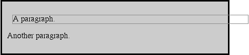
不错，子元素确实比其父元素还宽！数学计算并没有错误：
10px + 0 + 0 + 440px + 0 + 0 - 50px = 400px
440px是width: auto的实际计算值，需要这样一个数与等式中余下的值相抵（从而使总和为400px）。尽管这导致子元素超出了其父元素，但并没有违反规范，因为7个属性值加在一起仍等于所需的总宽度。这在语义上有些牵强，但确实是合法的行为。
替换元素
到目前为止，我们已经介绍了正常文本流中非替换块级元素的水平格式化。替换块级元素管理起来更简单一些。非替换块元素的所有规则同样适用于替换块元素，只有一个例外：如果width为auto，元素的宽度则是内容的固有宽度。下例中的图像宽度是20像素，因为这正是原图像的宽度：<img src="smile.png" style="display: block; width: auto; margin: 0;">
如果实际图像的宽度是100像素，那么元素的宽度也将是100像素。可以为width指定一个特定值覆盖这个规则。
注意，元素的高度也会增加。如果一个替换元素的width不同于其固有宽度，那么height值也会成比例变化，除非height自己也显式设置为一个特定值。反过来也一样：如果设置了height，但width保持为auto，则width将随height的变化成比例调整。
百分数高度
如果一个块级正常流元素的height设置为一个百分数，这个值则是包含块height的一个百分数。给定以下标记，相应的段落高度将是3em:1
2<div style="height: 6em;">
<p style="height: 50%;">Half as tall</p>
由于将上、下外边距设置为auto时，实际上它们的高度将是0，因此，将元素垂直居中的唯一办法就是把上、下外边距都设置为25%。
不过，如果没有显式声明包含块的height，百分数高度会重置为auto，如果修改上例，使div的height为auto，段落将与div本身的高度完全相同：1
2
3<div style="height: auto;">
<p style="height: 50%;">NOT half as tall; height reset to auto</p>
</div>
auto高度
在最简单的情况下，如果块级正常流元素设置为height: auto。显示时其高度将恰好足以包含其内联内容（包括文本）的行盒。高度为auto时，会在段落上设置一个边框，并认为没有内边距，这样下边框刚好在文本最后一行的下面，上边框则刚好在文本第一行的上面。
如果块级正常流元素的高度设置为auto，而且只有块级子元素，其默认高度将是从最高块级子元素的外边框边界到最低块级子元素外边框边界之间的距离。因此，子元素的外边距会“超出”包含这些子元素的元素（这种行为将在下一节解释）。不过，如果块级元素有上内边距或下内边距，或者有上边框或下边框，其高度则是从其最高子元素的上外边距边界到其最低子元素的下外边距边界之间的距离：1
2
3
4
5
6<div style="height: auto; background: silver;">
<p style="margin-top: 2em; margin-bottom: 2em;">A paragraph!</p>
</div>
<div style="height: auto; border-top: 1px solid; border-bottom: 1px solid; background: silver;">
<p style="margin-top: 2em; margin-bottom: 2em;">Another paragraph!</p>
</div>
如果在上例中将边框改为内边距，对div高度的作用还是一样：同样会把段落的外边距包含在内。
合并垂直外边距
垂直格式化的另一个重要方面是垂直相邻外边距的合并。这种合并行为只应用于外边距。如果元素有内边距和边框，它们绝对不会合并。
来看一个无序列表，其列表项前后相邻，这是一个展示外边距合并的绝好例子。假设为一个包含5个列表项的列表作以下声明：li {margin-top: 10px; margin-bottom:15px;}
每个列表项有10像素的上外边距和15像素的下外边距，不过，在显示这个列表时，相邻列表项之间的距离是15像素，而不是25像素。之所以会这样，是因为相邻外边距会沿着竖轴合并。换句话说，两个外边距中较小的一个会被较大的一个合并。下图显示了合并外边距与未合并外边距之间的差别。
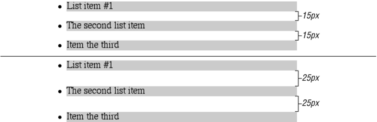
如果用户代理实现正确，将合并垂直相邻的外边距，如图中第一个列表所示，这里各列表项之间有15像素的间隔。第二个列表显示了用户代理没有合并外边距时会出现什么情况，此时列表项之间有25像素的间隔。
如果相邻有多个外边距，也会出现合并，如列表的最后。对前面的例子做些补充，假设应用以下规则：1
2
3ul {margin-bottom: 15px;}
li {margin-top: 10px; margin-bottom: 20px;}
h1 {margin-top: 28px;}
列表中最后一项的下外边距为20像素，ul的下外边距为15像素，后面的h1的上外边距为28像素。所以一旦合并这些外边距，li的结尾到h1的开始之间有28像素的距离，如图所示。
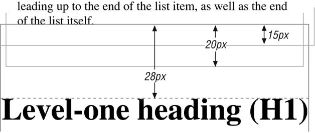
负外边距
负外边距确实对垂直格式化有影响，而且它们会影响外边距如何合并。如果垂直外边距都设置为负值，浏览器会取两个外边距绝对值的最大值。如果一个正外边距与一个负外边距合并，会从正外边距减去这个负外边距的绝对值。换句话说，负值要增加到正值，所得到的就是元素间的距离。
注意，上、下外边距为负时有一种“拉近”效果。实际上，这与负水平外边距使元素超出其父元素没有什么区别。请考虑：1
2
3
4
5
6p.neg {margin-top:-50px; margin-right: 10px; margin-left: 10px; margin-bottom: 0; border: 3px solid gray;}
<div style="width: 420px; background-color: silver;
padding: 10px; margin-top: 50px; border: 1px solid;">
<p class="neg"> A paragraph. </p> A div.
</div>
因为段落的上外边距为负，所以它被向上“拉”了 50像素。注意，以上标记中在段落后面有一个div，这个div的内容也向上拉了50像素。
列表项
列表项有自身的一些特殊规则。这些列表项前面通常有一个标志，如一个圆点或一个数字。这个标志实际上并不是列表项内容区的一部分，与一个列表项元素关联的标志可能在列表项内容之外，也可能处理为内容开始处的一个内联标志，这取决于属性list-style-position的值，如果标志放在内部，那么这个列表项相对于其相邻列表项就像一个块级元素一样。
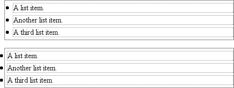
如果标志在内容之外，它会放在与内容左边界有一定距离的位置上（对于从左向右读的语言）。不论如何改变列表的样式，标志与内容边界的距离都不变。
行内元素
除了块级元素，最常见的就是行内元素了。通过为行内元素设置框属性，可以进入到一个更有意思的领域。行内元素有一些很好的例子，如em标志和a标志，这两个标志都是非替换元素，另外图像也属于行内元素，不过图像是替换元素。
警告：本节介绍的所有行为都不适用于表元素。CSS2对于表和表内容的处理引入了一些新的属性和行为，表元素的表现与块级元素或行内元素大相径庭。
非替换元素和替换元素在内联内容方面的处理稍有不同，讨论行内元素的构造时我们将分别进行讨论。
行布局
首先，需要理解内联内容如何布局。对于行内元素来说，这没有块级元素那么简单和直接，块级元素只是生成框，通常不允许其他内容与这些框并存。
为了理解如何生成行，首先来考虑这样一种情况，一个元素包含一个很长的文本行，如下图所示。
注意，这里将整行包围在一个span元素中，从而为这一行加了一个边框，然后为之指定边框样式：span {border:1px dashed black;}
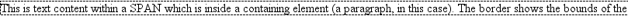
显示了行内元素包含在一个块级元素中的最简单的情况。就其本身来说，这与包含两个词的段落没有什么区别。
如果改变span样式，使之有一个背景色，这些行的具体摆放就很清楚了。下面来看图7-29，其中包含4个段落，每个段落有不同的text-align值，而且每个段落的文本行都有背景。
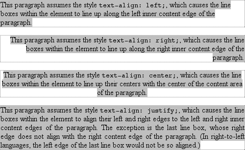
可以看到，并不是每一行都达到其父段落内容区的边界，父段落内容区用一个灰色虚线边框指示。对于左对齐的段落，行都压到段落内容区的左边对齐，各行在换行处结束。右对齐的段落则恰好相反。居中段落中，文本行的中心与段落的中心对齐。在最后一种情况下，即text-align的值为justify，各行必须与段落的内容区宽度相等，所以行边界要达到段落的内容边界。要调整各行中字母和字之间的间隔来弥补行实际长度与段落宽度之间的差距。因此，文本两端对齐时word-spacing的值可能被覆盖（如果letter-spacing是一个长度值，这个值则不能被覆盖）。
这就很好地说明了这些最简单的情况下文本行是如何生成的。不过，后面将会看到，行内格式化模型远没有这么简单。
基本术语和概念
进一步介绍后面的内容之前，先来回顾行内布局的一些基本术语，这对于学习后面的小节非常重要：
- 匿名文本
匿名文本（anonymous text）是指所有未包含在行内元素中的字符串。因此，在标记<p> I'm <em>so</em> happy!</p>中，序列“I’m”和 “happy!”都是匿名文本。注意，空格也是匿名文本的一部分，因为空格与其他字符一样都是正常的字符。 - em框
em框在字体中定义，也称为字符框（character box）。实际的字形可能比其em框更高或更矮。在CSS中，font-size的值确定了各个em框的高度。 - 内容区
在非替换元素中，内容区可能有两种，CSS2.1规范允许用户代理选择其中任意一种。内容区可以是元素中各字符的em框串在一起构成的框，也可以是由元素中字符字形描述的框。本书中，为简单起见采用了前一种定义，即em框定义。在替换元素中，内容区就是元素的固有高度再加上可能有的外边距。边框或内边距。 - 行间距
行间距（leading）是font-size值和line-height值之差。这个差实际上要分为两半，分别应用到内容区的顶部和底部。毫不奇怪，为内容区增加的这两部分分别称为半间距（half-leading）。行间距只应用于非替换元素。 - 行内框
这个框通过向内容区增加行间距来描述。对于非替换元素，元素行内框的高度刚好等于line-height的值。对于替换元素，元素行内框的高度则恰好等于内容区的高度，因为行间距不应用到替换元素。 - 行框
这是包含该行中出现的行内框的最高点和最低点的最小框。换句话说，行框的上边界要位于最高行内框的上边界，而行框的底边要放在最低行内框的下边界。
根据前面介绍的术语和定义，CSS还提供了一组行为和有用的概念：-
- 内容区类似于一个块级元素的内容框。
- 行内元素的背景应用于内容区及所有内边距。
- 行内元素的边框要包围内容区及所有内边距和边框。
- 非替换元素的内边距、边框和外边距对行内元素或其生成的框没有垂直效果，也就是说，它们不会影响元素行内框的高度（也不会影响包含该元素的行框的高度）。
- 替换元素的外边距和边框确实会影响该元素行内框的高度，相应地，也可能影响包含该元素的行框的高度。
- 还有一点需要注意：行内框在行中根据其vertical-align属性值垂直对齐。
在继续介绍之前，先来看如何逐步构造一个行框，可以通过这个过程来了解一行的各部分如何共同确定其高度：
- 按以下步骤确定行中各元素行内框的高度：
- 得到各行内非替换元素及不属于后代行内元素的所有文本的font-size值和line-height值，再将line-height减去font-size，这就得到了框的行间距。这个行间距除以2，将其一半分别应用到em框的顶部和底部。
- 得到各替换元素的height、margin-top、margin-bottom, padding-top、 padding-bottom, border-top-width和border-bottom-width值，把它们加在一起。
- 对于各内容区，确定它在整行基线的上方和下方分别超出多少。这个任务并不容易：你必须知道各元素及匿名文本各部分的基线的位置，还要知道该行本身基线的位置，然后把它们对齐。另外，对于替换元素，要将其底边放在整行的基线上。
- 对于指定了vertical-align值的元素，确定其垂直偏移量。由此可知该元素的行内框要向上或向下移动多远，并改变元素在基线上方或下方超出的距离。
- 既然已经知道了所有行内框会放在哪里，再来计算最后的行框高度。为此，只需将基线与最高行内框顶端之间的距离加上基线与最低行内框底端之间的距离。
下面详细考虑整个过程，这对于聪明地设置内联内容的样式很关键。
行内格式化
所有元素都有一个line-height。这个值会显着地影响行内元素如何显示，所以要特别注意。
首先来看如何确定一行的高度。行的高度（或行框的高度）由其组成元素和其他内容（如文本）的高度确定。有一点很重要，line-height实际上只影响行内元素和其他行内内容，而不影响块级元素，至少不会直接影响块级元素。也可以为一个块级元素设置line-height 值，但是这个值只是应用到块级元素的行内内容时才会有视觉影响。例如，考虑以下空段落：<p style="line-height: 0.25em;"></p>
由于没有内容，这个段落没有任何显示，你什么也看不到。这个段落的line-height可能是某个值（不论是0.25em还是25in），但是如果没有内容，line-height是多少对于创建行框来说都没有任何区别。
当然可以为一个块级元素设置line-height值，并将这个值应用到块中的所有内容，而不论内容是否包含在行内元素中。从某种程度上讲，块级元素中包含的各文本行本身都是行内元素，而不论是否真正用行内元素的标记包围起来。只要你愿意，可以像下面这样写一个虚构的标记序列：1
2
3
4
5<p>
<line>This is a paragraph with a number of</line>
<line>lines of text which make up the</line>
<line>contents.</line>
</p>
尽管line标记并不真的存在，但是段落表现得就像有这些标记一样，每个文本行从段落继承了样式。因此，只需为块级元素创建line-height规则，而不必显式地为其所有行内元素（也许只是虚构的行内元素）声明line-height。
虚构的line元素确实可以说明对块级元素设置line-height会有怎样的行为。根据CSS规范，在块级元素上声明line-height会为该块级元素的内容设置一个最小行框高度。因此，声明p.spacious{line-height: 24pt;}意味着每个行框的最小高度为24点。从理论上讲，只有行内元素的内容才会继承这个行高。大多数文本并未包含在行内元素中。因此，如果假装各行包含在虚构的line元素中，这个摸型就能很好地工作。
行内非替换元素
在前面的格式化知识基础上，来讨论如果行中只包含非替换元素（或匿名文本）将如何构造。了解这一点后，你就能更好地理解行内布局中非替换元素和替换元素之间的区别。
建立框
首先，对于行内非替换元素或匿名文本某一部分，font-size值确定了内容区的高度。如果一个行内元素font-size为15px，则内容区的高度为15像素，因为元素中所有em 框的高度都是15像素，如下图所示
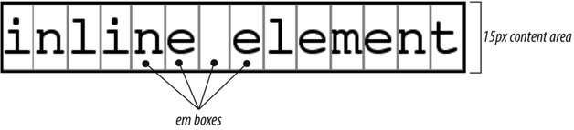
下面再来考虑元素的line-height值，以及它与font-size值之差。如果一个行内非替换元素的font-size为15px, line-height为21px，则相差6像素。用户代理将这6像素一分为二，将其一半分别应用到内容区的顶部和底部，这就得到了行内框。这个过程如下图所示:
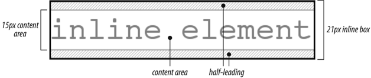
假设有以下标记：1
2
3
4<p style="font-size: 12px; line-height: 12px;">
This is text,<em>some of which is emphasized</em>, plus other text<br> which is <strong style="font-size: 24px;">strongly emphasized</strong> and which is<br>
larget than the surrounding text.
</p>
在这个例子中，大多数文本的font-size都是12px，只有一个行内非替换元素中的文本大小是24px。不过，所有文本的line-height都是12px，因为line-height是一个继承属性。因此，strong元素的line-height也是12px。
所以，对于font-size和line-height都是12px的各部分文本，内容高度没有改变（因为12px和12px之差为0)，因此，行内框的高度为12像素。不过，对于strong文本，line-height和font-size之差是-12px，将其除2来确定半间距（-6px），再把这个半间距分别增加到内容区的顶部和底部，就得到了行内框。由于这里增加的都是负数，所以最后行内框高度为12像素。12像素高的行内框在元素内容区（24像素高）中垂直居中，所以行内框实际上小于内容区。
至止，听上去对各部分文本所做的都一样，而且所有行内框大小都相等，但并非如此。第二行中的行内框尽管大小相同，但它们排列得并不整齐，因为文本都是按基线对齐的（见图）。
由于行内框确定了整个行框的高度，其相互位置很重要。行框定义为行中最高行内框的顶端到最低行内框底端之间的距离，而且各行框的顶端挨着上一行行框的底端。根据上图所示的结果，段落将如下图所示。
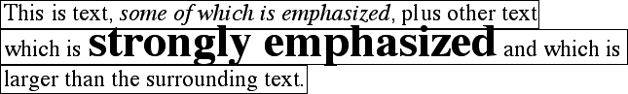
注意：在图中可以看到，中间一行比另外两行要高，不过还是不够大，不能把所有文本都包含在内。匿名文本的行内框确定了行框的底端，strong元素行内框的顶端则设置了行框的顶端。由于行内框的顶端在元素内容区内部，所以元素的内容落在了行框的外面，实际上与其他行框发生了重叠。其结果是，文本行看上去很不规则。本章后面还将介绍一些方法来处理这种行为，另外会介绍一些能得到一致基线间隔的方法。
垂直对齐
如果改变行内框的垂直对齐，会应用同样的高度确定原则。假设为strong元素指定垂直对齐为4px:1
2
3
4
5<p style="font-size: 12px; line-height: 12px;">
This is. text,<em>some of which is emphasized</em>, plus other cext<br>
that is <strong style="font-size: 24px; vertical-align: 4px;">strongly emphasized<strong>and that is<br>
larger than the surrounding text.
</p>
这个小小的改动会把元素上升4像素，这会同时提升其内容区和行内框。由于strong 元素的行内框顶端已经是行中的最高点，对垂直对齐的这个修改会把整个行框的顶端也向上移4像素，如图所示。
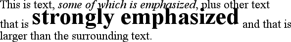
下面来考虑另一种情况，strong文本所在行上还有一个行内元素，其对齐方式未设置为基线对齐：1
2
3
4
5<p style="font-size: 12px; line-height: 12px;">
this is text,<em>some of which is emphasized</em>, plus other text<br>
that is <strong style="font-size: 24px;">strong</strong> and <span style="vertical-align: top;">tall</span> and that is<br>
larger than the surrounding text.
</p>
现在的结果与前面的例子相同，即中间的行框比另外两行要高。不过，注意图中tall 文本是如何对齐的。
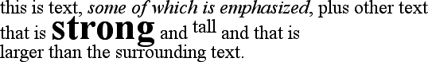
在这种情况下，tall文本行内框的顶端与行框的顶端对齐。由于tall文本的font-size 和line-height值相等，所以其内容高度与行内框相同。不过，再考虑以下情况：1
2
3
4
5<p style="font-size: 12px; line-height: 12px;">
This is text,<em>some of which is Gmphasized</em>, plus other text<br>
that is <strong style="font-size: 24px;">strong</strong> and <span style="vertical-align: top; line-height: 4px;">tall</span> and that is<br>
larger than the surrounding text.
</p>
由于tall文本的line-height小于其font-size，该元素的行内框比其内容区要小。这会改变文本本身的放置，因为其行内框的顶端必须与该行行框的顶端对齐。所以，可以得到下图所示的结果。
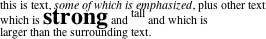
另一方面，可以将tall文本设置为line-height实际上大于其font-size，例如：1
2
3
4
5
6<p style="font-size: 12px; line-height: 12px;">
This is text,<em>some of which is emphasized</em>, plus other text<br>
that is <strong style="font-size: 24px;">strong</strong>
and <span style="vertical-align: top; line-height: 18px;">tall</span>and that is<br>
larger than the surrounding text.
</p>
因为为tall文本指定了line-height 等于18px, line-height 与 font-size之差是6像素。半间距为3像素，将半间距增加到内容区，得到行内框为18像素高。这个行内框的顶端与行框的顶端对齐。类似地，如果vertical-align值设置为bottom，则把行内元素行内框的底端与行框的底端对齐。
管理line-height
在前几节中我们已经了解到，改变一个行内元素的line-height可能导致文本行相互重叠。不过，在所有情况下，这种修改都是针对单个元素的，所以，如何以一种更一般的方式影响元素的line-height而避免内容重叠呢？
一种办法是对font-size有改变的元素结合使用em单位。例如：1
2
3
4
5
6
7p {font-size: 14px; line-height: 1em;}
big {font-size: 250%; line-height: 1em;}
<p> Not only does this paragraph have "normal" text, but it also<br>
contains a line in which <big>some big text </big> is found.<br>
This large text helps illustrate our point.
</p>
通过为big元素设置一个line-height，就提高了行框的总高度，从而提供足够的空间来显示这个big元素，而不会与任何其他文本重叠，也不会改变段落中所有行的line-height。这里使用了值1em，所以big元素的line-height将设置为与big的 font-size大小相等。要记住，line-height相对于元素本身的font-size设置，而不是相对于父元素设置。其结果如下图所示。
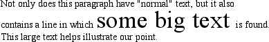
注意，以下样式也会生成如上图所示的结果：1
2p {fpnt-size: 14px; line-height: 1;}
big (font-size: 250%;)
除非line-height值作为缩放因子被继承，否则p和big元素的line-height值都为1。因此，行内框的高度与内容区的高度一致，如上图所示。
一定要真正理解前几节的介绍，因为如果再增加边框，问题会更复杂。假设在所有超链接上加一个5像素的边框：a:link {border: 5px solid blue;}
倘若没有设置一个足够大的line-height来容纳这个边框，就有覆盖其他行的危险。可以使用line-height增加未访问链接行内框的大小，就像前例中对big元素的做法一样；在这里，只需让line-height值比这些链接的font-size值大10像素。不过，如果你不知道字体大小是多少像素，这可能很困难。
另一种解决方法是增加段落的line-height。这将会影响整个元素中的每一行，而不只是出现加边框超链接的那一行：1
2p {font-size: 14px; line-height: 24px;}
a:link {border: 5px solid blue;}
由于各行上下都增加了额外的空间。超链接外的边框不会覆盖其他行，如下图所示，
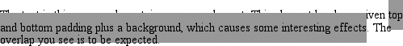
当然，这种方法在这里是可行的，因为所有文本的大小都相同。如果行中还有另外一些元素改变了行框的高度，边框情况也可能发生变化。考虑以下规则：1
2
3P {font-size: 14px; line-height: 24px;}
a:link {border: 5px solid blue;}
big {font-size: 150%; line-height: 1.5em;}
根据这些规则，段落中big元素行内框的高度将是31.5像素（14x1.5x1.5），这也是行框的高度。为了保证基线间隔一致，必须让p元素的line-height等于或大于32px。
基线与行高
各行框的具体高度取决于其组成元素相互之间如何对齐。这种对齐往往很大程度上依赖于基线落在各元素（或匿名文本各部分）中的哪个位置，因为这个位置确定了其行内框如何摆放。基线在各em框中的位置对于不同的字体是不同的。这个信息内里在字体文件中，除非直接编辑字体文件，否则无法修改。
因此，要得到一致的基线间隔，这更像是一门艺术而不只是一门科学。如果使用一种单位（如em）来声明所有字体大小和行高，就很有可能得到一致的基线间隔。不过，如果混合使用了不同的单位，就会困难得多，甚至是不可能的。
缩放行高
可以看到，设置line-height的最好办法是使用一个原始数字值。之所以说这种方法最好，原因是这个数会成为缩放因子，而该因子是一个继承值而非计算值。假设你希望一个文档中所有元素的line-height都是其font-size的1.5倍，可以如下声明：body {line-height: 1.5;}
缩放因子1.5在元素间逐层传递，在各层上，这个因子都作为一个乘数与各元素的font-size相乘。
增加框属性
从前面的讨论可以了解到，内边距、外边距和边框都可以应用于行内非替换元素。行内元素的这些方面根本不会影响行框的高度。如果对一个无内外边距的span元素应用某个边框，行内元素的边框边界由font-size而不是line-height控制。换句话说，如果一个span元素的font-size为12px, line-height为36px，其内容区就是12px高，边框将包围该内容区。
或者，可以为行内元素指定内边距，这会把边框从文本本身拉开：span {border: 1px solid black; padding: 4px;}
注意，这个内边距并没有改变内容区的具体形状，不过它会影响这个元素行内框的高度。类似地，向一个行内元素增加边框也不会影响行框的生成和布局。
至于外边距，实际上，外边距不会应用到行内非替换元素的顶端和底端，它们不影响行框的高度。不过，行内元素的两端则是另一回事。
注意：CSS2.1中明确指定了外边距的放置，它定义了margin-top和margin-bottom （可以应用到不是行内非替换元素的所有其他元素），而不是简单地说用户代理应当忽略上、下外边距。
应当还记得，行内元素基本上会作为一行放置，然后分成多个部分，所以，如果向一个行内元素应用外边距，这些外边距将出现在其开始和末尾，分别为左、右外边距。内边距也出现在边界上。因此，尽管内边距和外边距（以及边框）不影响行高，但是它们确实能影响一个元素内容的布局，可能将文本推离其左右两端。实际上，如果左、右外边距为负，可能会把文本拉近行内元素，甚至导致重叠。
如果行内元素有一个背景，而且内边距足够大以至于行背景重叠，此时会发生什么情况呢？看下面的例子：1
2p {font-size: 15px; line-height: 1em;}
p span {background:#999; padding-top: 10px; padding-bottom: 10px;}
span元素中的所有文本都有15像素高的内容区，而且为各内容区的顶部和底部各增加了10像素的内边距。这些额外的像素不会增加行框的高度，这原本很好，不过这里有背景色。因此，会得到下图所示的结果。
CSS 2.1明确指出行框按文档的顺序绘制：“这会导致后续行的边框在前面行的边框和文本上绘制。”这个原则同样适用于背景，如上图所示。另一方面，CSS2允许用户代理“‘切掉’边框和内边距区（也就是不显示边框和内边距）”。因此，具体结果可能很大程度上取决于用户代理遵循哪一个规范。
行内替换元素
一般认为行内替换元素（如图像）有固有的高度和宽度，例如，一个图像的高度和宽度可能是某个像素数。因此，有固有高度的替换元素可能导致行框比正常要高。这不会改变行中任何元素的line-height值，包括替换元素本身。相反，只是会让行框的高度恰好能包含替换元素（以及所有框属性）。换句话说，会用替换元素整体（包括内容、外边距、边距和内边距）来定义元素的行内框。以下样式就能得到这样一个例子，如下图所示：1
2p {font-size: 15px; line-height: 18px;}
img (height: 30px; margin: 0; padding: 0; border: none;}
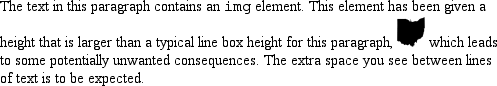
尽管有所有这些空白，但段落或图像本身的line-height有效值并没有因此改变。line-height:对图像的行内框没有任何影响。由于上图中的图像没有内边距、外边距或边框，其行内框与其内容区相同，在这里就是30像素高。
然而，行内替换元素还是有一个line-height值。为什么呢？在最常见的情况下，行内替换元素需要这个值，从而在垂直对齐时能正确地定位元素。例如，要记住，vertical-align的百分数值要相对于元素的line-height来计算。所以：1
2
3
4
5p {font-size: 15px; line-height: 18px;}
img {vertical-align: 50%;}
<p>The image in this sentence <img src="test.gif" alt="test image">
will be raised 9 pixels.</p>
line-height的继承值使图像上升9个像素（而不是其他数字）。如果没有line-height值，它就无法完成百分数值指定的垂直对齐，对于垂直对齐来说，图像本身的高度无关紧要，关键是line-height的值。
不过，对于其他替换元素，将line-height值传递到该替换元素中的后代元素可能很重要。SVG图像就是这样一个例子，它使用CSS对图像中的所有文本设置样式。
增加框属性
有了以上了解，看上去向行内替换元素应用外边距、边距和内边距似乎很简单。
内边距和边框像平常一样应用到替换元素，内边距在具体内容外插入空间，边框围绕着内边距。这个过程的不寻常之处在于，内边距和边框确实会影响行框的高度，因为它们要作为行内替换元素的行内框的一部分（不同于行内非替换元素）。考虑下图，这是由以下样式得到的：1
2
3img (height: 20px; width: 20px;)
img.one (margin: 0; padding: 0; border: 1px dotted;)
img.two (margin: 5px; padding: 3px; border: 1px solid;)
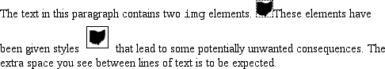
注意，第一个行框的高度足以包含这个图像，第二个行框的高度则足以包含图像、其内边距和边框。
外边距也包含在行框中，不过外边距有自己的问题。设置正外边距没有什么特殊的地方，只是使替换元素的行内框更高。设置负外边距也有类似的效果：这会减少替换元素行内框的大小，如下图所示，可以看到，负的上外边距会把图像上面的一行向下拉：img.two {margin-top:-10px;}
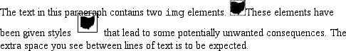
当然，负外边距对块级元素有也同样的作用。在这种情况下，负外边距会使替换元素的行内框小于正常大小。负外边距是使行内替换元素挤入其他行的唯一办法。
替换元素和基线
你现在可能注意到了，默认地，行内替换元素位于基线上，如果向替换元素增加下内边距、外边距或边框，内容区会上移。转换元素并没有自己的基线，所以相对来讲最好的办法是将其行内框的底端与基线对齐。因此，实际上是下外边距边界与基线对齐，如下图所示。
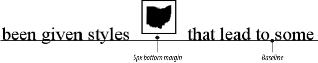
这种基线对齐会有一个意想不到（而且不受欢迎）的后果：如果一个表单元格中只有一个图像，这个图像要让表单元格足够高，从而能把包含该图像的行框包含在内。即使没有具体的文本，甚至没有空白符，包含图像的表单元格中还是会出现这种大小调整。因此，已经使用多年的分片图像和间隔GIF设计在现代浏览器中可能表现很糟糕。考虑以下最简单的情况：1
2td {font-size: 12px;}
<td><img src ="spacer.gif" height="1" width="10 "></td>
在CSS行内格式化模型中，表单元格将是12像素高，图像位于单元格的基线上。所以图像下面可能有3像素的空间，上面有8像素的空间，不过具体的距离要取决于所用的字体系列及其基线的位置。这种行为并不仅限于表单元格中的图像，只要一个行内替换元素是块级元素或表单元格元素中的唯一后代，都会有这种行为。例如，div中的一个图像也会放在基线上。
对于这种情况，最常用的解决方法是使间隔图像成为块级元素，这样它们就不会生成行框。例如：1
2
3
4td {font-size: 12px;}
img.block {display: block;}
<td><img src="spacer.gif" height="1" width="10" class="block"></td>
另一个可取的修正办法是，将包含图像的表单元格的font-size和line-height都设置为1px，这会使行框的高度只能放下1像素的图像。
行内替换元素位于基线上还有一个有意思的效果：如果应用一个负的下外边距，元素实际上会被向下拉，因为其行内框的底端将比其内容区的底端高。
警告：有些浏览器只是把内容区的底端放在基线上，而忽略负的下外边距。
行内模型历史溯源
CSS行内格式化模型看上去可能有些没必要的复杂，而且在某些方面，甚至与创作人员的意愿相违背。遗憾的是，我们现在要创建的是这样一种样式语言，它既能与CSS之前的Web浏览器向后兼容，还要为将来扩展到更复杂的领域敞开大门，它将过去和现在笨拙地混合在一起，而上述行内格式化模型的这种复杂性正是这样做的直接后果，另外还有一个原因，我们可能会做一些合理的决策来避免一个不期望的后果，但这可能又会导致另一个不期望的后果出现。
例如，有图像和垂直对齐文本的文本行会“散开”，究其原因，这要归根于Mosaic 1.0的做法。在这种浏览器中，段落中的所有图像都会留出足够大的空间来包含该图像，这种做法很好，因为这样可以避免图像与其他行中的文本重叠。所以，在CSS引入为文本和行内元素设置样式的方法时，设计者则尽力创建这样一个模型，（默认地）它不会导致行内图像与其他文本行重叠。不过，这个模型也意味着存在另外一些问题，例如，上标元素（sup）很可能也会使行拉开距离。
这种效果使一些创作人员很恼火，他们希望行基线之间的距离应该固定，不过再来看另一种情况。如果line-height要求基线之间的距离是指定的，最后很可能使行内替换元素和垂直移动元素与其他文本行重叠——这也会使创作人员不满意。幸运的是，CSS有足够强大的功能，总能以这样或那样的某种方式得到你想要的效果，CSS的将来还会有更大潜力。
行内块元素
看上去值名inline-block是一个混合产物，实际上也确实如此，行内块元素（inline-block element）确实是块级元素和行内元素的混合，这个display值是CSS2.1中新增的。
行内块元素作为一个行内框与其他元素和内容相关。换句话说，它就像图像一样放在一个文本行中，实际上，行内块元素会作为替换元素放在行中。这说明，行内块元素的底端默认地位于文本行的基线上，而且内部没有行分隔符。
在行内块元素内部，会像块级元素一样设置内容的格式。就像所有块级或行内替换元素一样，行内块元素也有属性width和height，如果比周围内容高，这些属性会使行高增加。
如果行内块元素的width未定义，或者显式声明为auto，元素框会收缩以适应内容。也就是说，元素框的宽度刚好足够包含该内容，而没有多余的空间。行内框也会这样做，不过行内框可能会跨多个文本行，而行内块元素不能。
计算值
如果元素是浮动元素或定位元素，display的计算值可以改变。如果为一个根元素声明display值，计算值也可以改变。实际上，display、position和float值会以很有意思的方式相互影响。
如果一个元素是绝对定位元素，float的值设置为none。对于浮动元素或绝对定位元素，计算值由声明值确定
| - | - |
| 声明值 | 计算值 |
| inline-table | table |
| inline, run-in, table-row-group, table-column, table-column -group, table-header-group, table-footer-group, table-row, table-cell, table-caption, inline-block | block |
| 所有其他 | 根据指定确定 |
对于根元素，如果声明为值inline-table或table，都会得到计算值table，声明为none时则会得到同样的计算值（none）。所有其他display值都计算为block。